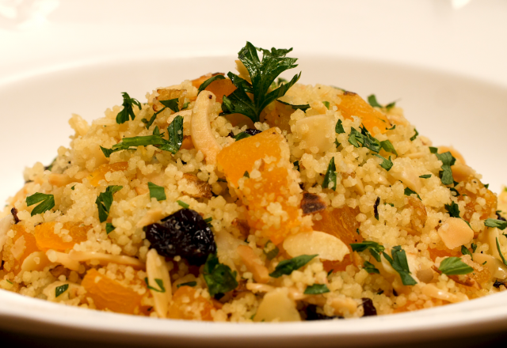

Couscous marroquino

Ingredientes
- 1 copo americano /250 g de cuscuz marroquino (semolina)
- 1 colher (sopa) de manteiga
- 2 colheres (sopa) de azeite de oliva
- 2 dentes de alho picadinho
- 4 colheres (sopa) de uvas-passas
- 4 colheres (sopa) de uvas-passas
- 2 copos americano de água fervendo
- 1 tablete de caldo de legumes
- 6 colheres (sopa) de cebola picadinha
- 100 g de amêndoas laminadas e torradas
- 4 colheres (sopa) de damascos picados
- pimenta-do-reino a gosto
- Sal a gosto
Modo de preparo
- Em uma frigideira com azeite, frite a cebola, o alho, acrescente as amêndoas e salteie, em seguida adicione as uvas passas e o damasco.
- Em um refratário, dissolva o caldo de legumes em água fervente e adicione uma colher de manteiga, coloque todo o cuscuz nesta água, cubra e deixe descansar por 5 minutos para que o cuscuz absorva toda a água.
- Junte a mistura de amêndoas ao cuscuz e misture bem, acertando o sal e colocando pimenta a gosto.
- Salpique com salsinha picada.
-> Voltar a lista de receitas <-
-> Página Principal <-